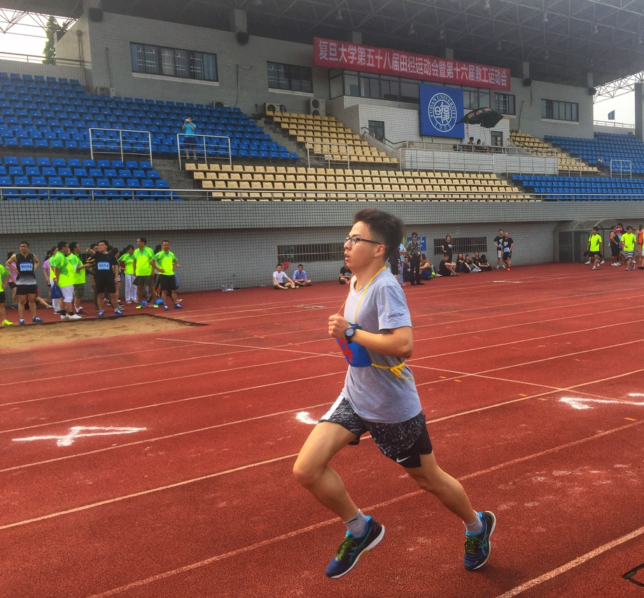

I like running, playing badminton and swimming.
I'm running the London Marathon 2027 for GOSH (Great Ormond Street Hospital Children's Charity). Any support is hugely appreciated!
2027tcslondonmarathon.enthuse.com/pf/shida-wang
